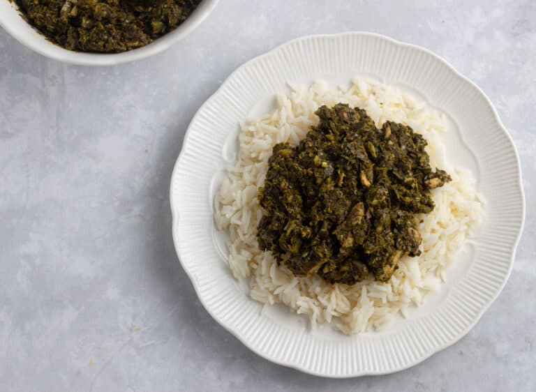

Pondu

Description
A classic dish that's celebrated throughout an entire continent
Ingredients
- Cassava Leaves
- Leek
- Green Pepper
- Garlic
- Spring onions
- Bouillon cubes
- Palm oil
- Eggplant
- Scotch bonnet pepper
- Salt
- Sardines
Steps
- Leave the frozen pondu to thaw, then wash in a colander under the tap. Squeeze out excess liquid and keep it to one side.
- Cut the eggplant into cubes.
- Wash the leek, spring onions and peppers. Next, peel the onions and garlic.
- Cut the leek, green pepper, onions, and garlic and blend coarsely in a food processor.
- Add the blended mixture into a pot, then pour in the pondu. Add stock cubes and cook for 30 mins.
- Add a cup of water to the pan, then add the palm oil, cubed eggplant and scotch bonnet pepper. Cook for 1 hr.
- aste for salt, then add the sardines and cook for another 10 mins.
- Remove from heat and serve.